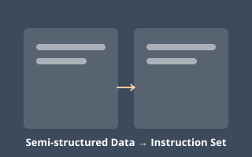
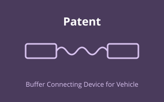

Publications
A selection of my peer-reviewed papers, conference submissions, and patents, spanning large language models, LLM security, recommender systems, instruction tuning, and engineering simulation.
-

Bypassing LLM Safeguards: The In-Context Tense Attack (ITA) Approach
International Conference on Computer Engineering and Networks · arXiv:2406.12243 · 2024
- LLM
- Security
- Jailbreak
-

CherryRec: Enhancing News Recommendation Quality via an LLM-Driven Framework
ICASSP · 2025 · Under review
- LLM
- Recommender
- News
-
LLaMA-MoT: A Cost-Effective Framework for Visual-Linguistic Instruction Tuning Based on Multi-Head Adapters and Chain-of-Thought
Expert Systems with Applications (ESWA) · Under review
- LLM
- Multimodal
- Instruction Tuning
-

An Agile Construction Method of Instruction Fine-Tuning Datasets Based on Semi-Structured Data
Patent · 2024 · Submitted
- Patent
- LLM
- Dataset
-
Finite Element Analysis of a Modular Automotive Body Based on Ansys
Guangxi Journal of Light Industry · 2020
- Simulation
- Automotive
- FEA
-

Buffer Connecting Device for Vehicle
Patent · 2020
- Patent
- Mechanical
- Automotive
Additionally holds 8 patents, along with various other publications.